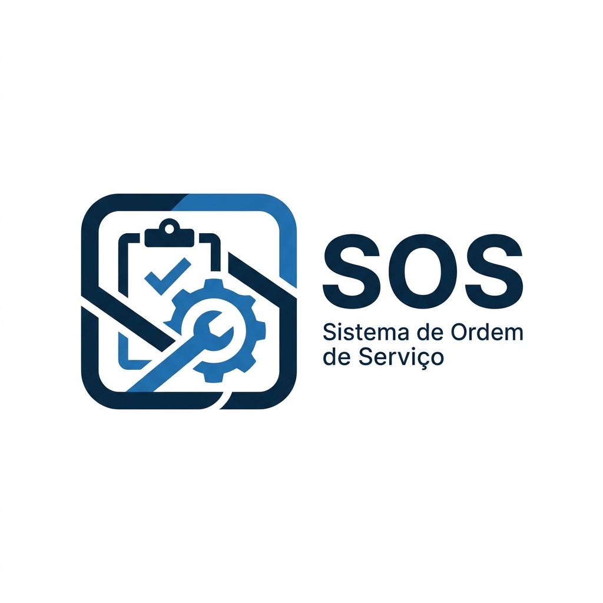

SOS - Sistema de Ordem de Serviço
Gestão completa de ordens de serviço com tecnologia Laravel, Ionic e Docker.
Construído com tecnologia moderna
Recursos Principais
Tudo que você precisa para gerenciar ordens de serviço com eficiência, velocidade e precisão.
Scanner de código de barras
Identificação rápida de equipamentos e produtos utilizando a câmera do dispositivo móvel.
Histórico de Cliente e Equipamento
Acompanhe todas as ordens feitas com poucos cliques e mantenha o registro completo de manutenções.
Admin Dashboard
Painel de controle centralizado para orquestração de técnicos, recursos e métricas.
Portal de clientes
Transparência total para o cliente final acompanhar o progresso do serviço, aprovar orçamentos e interagir com o suporte.
Pronto para transformar sua gestão?
Simplifique fluxos complexos, aumente a produtividade técnica e eleve a satisfação do cliente com o SOS - Sistema de ordem de serviço.